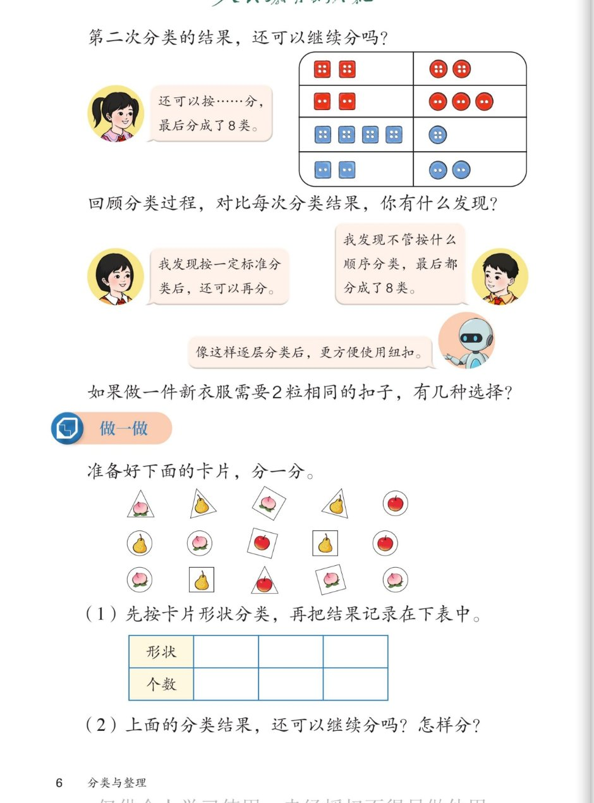

🧮 分类与整理 · 课本第 6 页 · 第三次分类与卡片做一做
人教版《数学》二年级上册 · 有声图文带读 · 先想后看解析
题数
6
认知
2
强化
3
拓展
1
本页重点
分类顺序与结果
🎧 分两步学：
① 解析教材图片
——纯声音读图，读到哪一块哪一块闪动提示；关键处先倒计时让你思考，再在图片下方给出解析并朗读。
② 分层提问练习
——六道分层题（认知 / 强化 / 拓展），先思考再展开解析、朗读参考答案；这一步不再回到图片。
也可以随时点任意一句话、图上任意一块单独听；点课本文字卡还会展开答案。
教材图片（点块听读，读到哪块哪块闪）

📖 人教版《数学》二年级上册 · 课本第 6 页 · 图片仅供个人学习，版权归人民教育出版社所有
🤔 想一想（点我可跳过）
课本的文字（点句子：听读 + 看答案）
课本问题
第二次分类的结果，还可以继续分吗？
看答案 ▾
答：还可以！
按颜色分出的每一类里，纽扣的
孔数
还不一样——有的 2 个孔，有的 4 个孔，所以还能再按
孔数
分一次。
女孩的气泡
还可以按……分，最后分成了 8 类。
看答案 ▾
第三次按孔数分：
红色方形分成 2 孔的和 4 孔的两类，红色圆形也一样；蓝色方形、蓝色圆形也都各分成 2 孔和 4 孔。
算一算
：4 类 × 每类再分 2 类 =
8 类
，和书上说的对上了。
课本问题
回顾分类过程，对比每次分类结果，你有什么发现？
看答案 ▾
书上有两个发现：
① 女孩：按一定标准分类后，
还可以再分
；
② 男孩：不管按什么
顺序
分类，最后都分成了
8 类
——顺序换了，结果不变。
女孩的发现
我发现按一定标准分类后，还可以再分。
看答案 ▾
这句话的意思：
只要分出的每一类里还有不同，就能
再选一个标准继续分
——这就是逐层分类。分到不能再分为止。
男孩的发现
我发现不管按什么顺序分类，最后都分成了 8 类。
看答案 ▾
验证一下：
先按形状→颜色→孔数，是 8 类；换成先按颜色→形状→孔数，最后还是同样的 8 类。
结论：分类的顺序换了，最终结果不变。
机器人的话
像这样逐层分类后，更方便使用纽扣。
看答案 ▾
分类的好处：
纽扣原来混在一起，找 2 粒一样的很难；逐层分类后，每类里的纽扣
完全相同
，一眼就能找到要用的——这就是分类让生活更方便。
课本问题
如果做一件新衣服需要 2 粒相同的扣子，有几种选择？
看答案 ▾
思考方法：
「相同」= 同一类的纽扣。在分好的 8 类里，
数一数哪几类够 2 粒
——够 2 粒的类有几类，就有几种选择。
✏️ 注意：只有 1 粒的那一类不够用，不算一种选择。你自己数一数、算一算。
做一做
准备好下面的卡片，分一分。
看答案 ▾
先观察卡片：
一共
15
张。形状有
三角形、正方形、圆形
三种；图案有
桃、梨、苹果
三种。能按形状分，也能按图案分。
做一做(1)
(1) 先按卡片形状分类，再把结果记录在下表中。
看答案 ▾
参考答案：
形状一行写「三角形、正方形、圆形」，个数一行对应写
4、5、6
。
自查
：4 + 5 + 6 = 15，和卡片总数对上，说明没数漏。
做一做(2)
(2) 上面的分类结果，还可以继续分吗？怎样分？
看答案 ▾
答：可以！
按形状分出的每一类里，图案还不同，可以再按
图案（桃 / 梨 / 苹果）
分一次。
3 种形状 × 每种再分 3 类 = 最后
9
类。先按图案分、再按形状分，最后也是这 9 类——顺序换，结果不变。
分层提问练习（先想后看解析）
🕳️
认知
纽扣第三次按什么分？最后分成了几类？
看解析
🤔 想一想
解析：
标准
：按
孔数
分——2 个孔的 / 4 个孔的
过程
：红方、红圆、蓝方、蓝圆 4 类，每类再分 2 类
结果
：4 × 2 =
8 类
🔁
认知
男孩对比每次分类结果，发现了什么？
看解析
🤔 想一想
解析：
发现
：不管按什么
顺序
分类，最后都分成
8 类
举例
：形状→颜色→孔数，和 颜色→形状→孔数，结果一样
结论
：顺序换，结果不变
📋
强化
卡片按形状分类，表格怎么填？
看解析
🤔 想一想
解析：
形状行
：三角形、正方形、圆形
个数行
：4、5、6（合计 15 张）
💡 自查：4 + 5 + 6 = 15，与卡片总数对上
🪜
强化
卡片按形状分完后，还能继续分吗？怎样分？
看解析
🤔 想一想
解析（逐层分类）：
第一层
：按形状 → 三角形、正方形、圆形（3 类）
第二层
：每类再按图案 → 桃 / 梨 / 苹果
结果
：3 × 3 =
9 类
；换顺序（先图案后形状）也是这 9 类
👔
强化
做新衣服要 2 粒相同的扣子，这个问题怎么想？
看解析
🤔 想一想
解析（教方法，不代答案）：
「相同」
= 同一类的纽扣（颜色、形状、孔数都一样）
方法
：在 8 类里逐类检查——
够 2 粒
的才算一种选择
提醒
：只有 1 粒的那类不够用，要排除
💡 数一数够 2 粒的类有几类，就是几种选择
🚀
拓展
回顾这三次分类，逐层分类有什么好处？
看解析
🤔 想一想
解析（开放题）：
好处一：
每层只用一个标准，越分越
清楚
，不会乱。
好处二：
分完后每类里的东西
完全相同
，要找什么马上就能找到。
🌈 结合生活举例（超市货架、图书馆、衣柜）说得有道理都算对
① 解析教材图片
② 分层提问练习
⏹ 停止
纯声音 + 高亮跟随 · 想好才出解析
← 返回导航